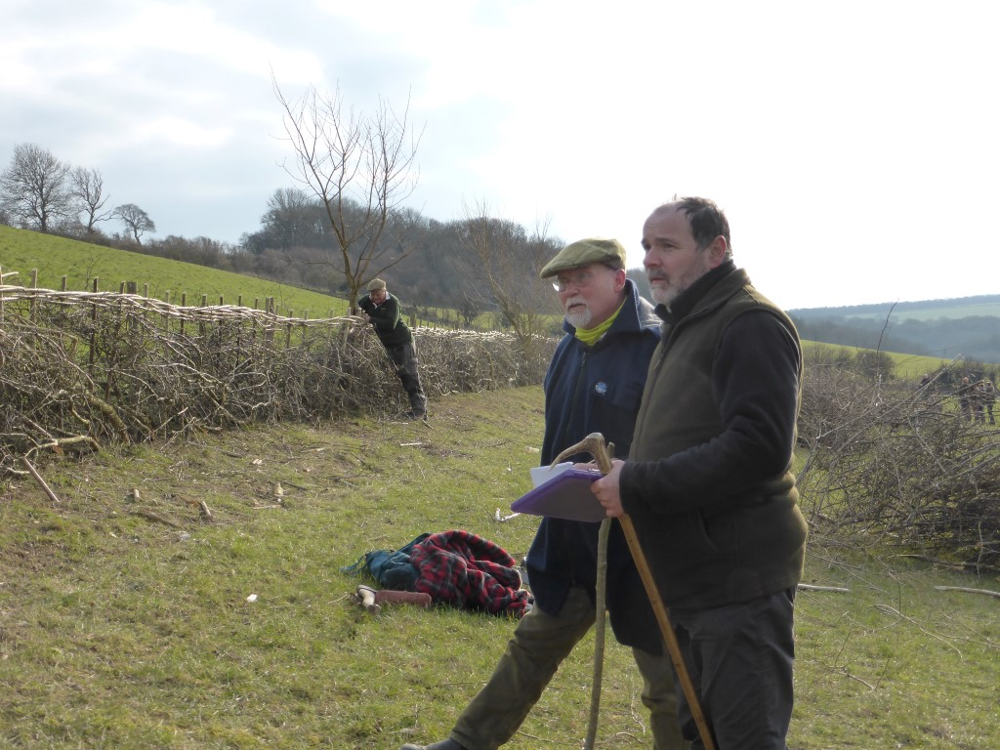

The 24th Annual Hedgelaying Competition was held on 27 February at Parkdown Barns, Calbourne Road, Newport, PO30 4HP, by kind permission of Mr and Mrs Mike Morris.
Lead sponsors in 2016: Landscape Therapy; Gift to Nature; Wight AONB; Hants & IW Wildlife Trust; Cross Country Services

A cold but dry day provided ideal conditions for the fourteen entrants to the 2016 Isle of Wight Hedgelaying Competition. The competition was held for the second year at Parkdown Barns, with landowner Mike Morris welcoming back the hedgerow group to finish off the hedge they had started laying in 2015.
A big field of seven entrants took part in the Open class, including last year's novice winner Rob Wood now promoted to the Open class. The Novices were reduced to just one entrant, Bowcombe man Richard Knowles. Six teams also took part, making the largest team class since 2012. The fourteen pitches were cut by a total of twenty-three competitors, plus a demonstration plot laid by former supreme national champion Peter Tunks, who drew attention with his usual impressive annual display of craftsmanship. There were some familiar faces amongst the competitors and also some new ones, with all eyes on mainland newcomer David Dunk, of Sussex, who had recently carried off the Most Improved Novice award at the South of England Hedge Laying Society 2016 competition at Scotney Castle.
Visitors to the site enjoyed a great display of skill and stamina from the competitors, as well as taking advantage of the excellent tea and cakes provided in the marquee. As usual there was a display of heritage tools from Ralph Griffin, and this year the competition also paid host to a running display of static engines and vehicles from Vectis Vintage Tractors and Engines Club, including a remarkable steam saw. This new attraction was very popular and received a lot of attention.
A light, even hedge meant that going was good, with most competitors finishing before the horn was blown to down tools. The judges had a tricky job ahead of them, and as it turned out there was only a single point between first and second place. Last year's champion Oswald Hoskyns of Whitwell was beaten into third place by two mainlanders, with Russell Woodham coming second, and David Dunk taking the top prize in the Open class. Impressively, David also carried off the Hand Tools prize and the Peter Tunks award for best stakes and heathers.
In the Novice class, Richard Knowles as the only entrant won both first and last place, and deservedly lifted the Mary Sitch Cup. The Landscape Therapy Trophy Team class was a good fight, with last year's winners the Island Ploughmen back to defend their title successfully from the Hampshire and Isle of Wight Wildlife Trust team who beat Murphy's Tree Fellars to take second place.
Results
| Position | Class | Name | Score |
|---|---|---|---|
| 1 | Open | David Dunk | 85 |
| 2 | Open | Russell Woodham | 84 |
| 3 | Open | Oz Hoskyns | 80 |
| 4 | Open | Dick Pulleine | 75 |
| 5 | Open | Rick Temple | 72 |
| 6 | Open | Rob Wood | 71 |
| 7 | Open | Chris Sparkes | 62 |
| 1 | Novice | Richard Knowles | 77 |
| 1 | Team | Island Ploughmen | 83 |
| 2 | Team | HIWWT | 78 |
| 3 | Team | Murphy's Tree Fellars | 76 |
| 4 | Team | James and Josh Cook (Little Cook Big Cook) | 75 |
| 5 | Team | Jerry and the Mess Makers | 68 |
| 6 | Team | Hampshire Woodland | 66 |
Winner of the W Hurst & Sons cup for the best hedge laid with hand tools:
David Dunk
The Peter Tunks £20 note award
An award was presented again on the day by former supreme national champion Peter Tunks, who awarded a £20 note for the straightest stakes and binding. The winner was David Dunk.